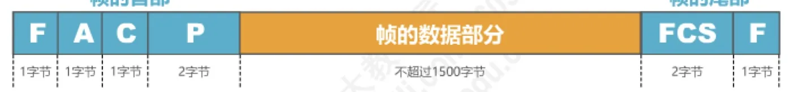
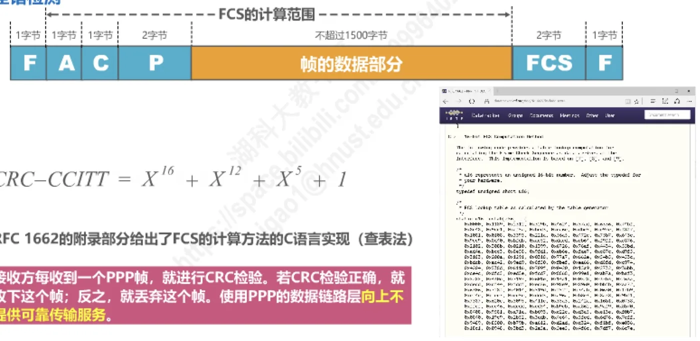
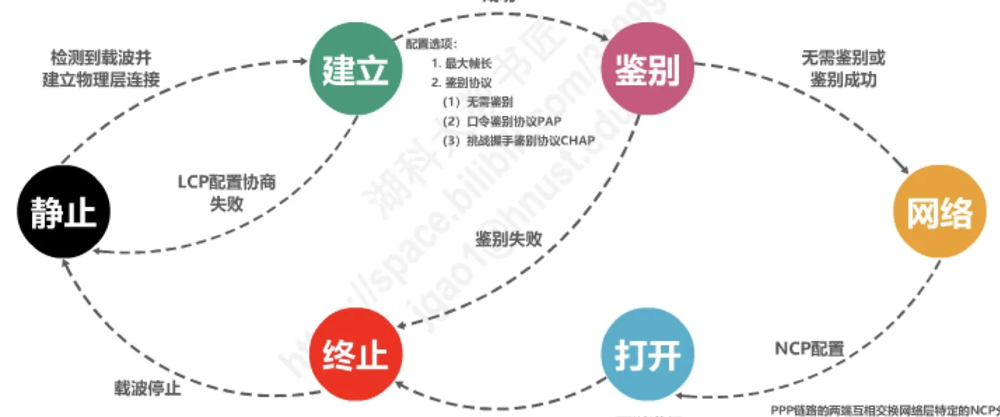

计算机通信与网络 · 第 3 章 数据链路层
3.5 点对点协议PPP
用户家里的计算机要接入因特网，链路上跑的就是本节的主角——点对点协议 PPP（Point-to-Point Protocol）。它是目前使用最广泛的点对点数据链路层协议：既要把各种网络层协议的数据报封装成帧，又要负责链路的建立、配置、测试与鉴别。本节依次讲它的三部分构成、帧格式、透明传输方法、差错检测以及链路的工作状态。
1. 为什么需要 PPP 协议
在 3.1 节讲过，数据链路层可以分成点对点信道和广播信道两类。点对点信道最典型的应用场景，就是用户接入因特网：家庭或单位的用户计算机通过一条广域网链路连到 ISP 的路由器，在这条链路上运行的数据链路层协议就是 PPP。
这条链路的两端各是谁？一端是用户的计算机，另一端是因特网服务提供者 ISP 的路由器。ISP 已经从因特网管理机构申请到一批 IP 地址，可以分配给接入的用户使用。目前常见的宽带接入方式叫 PPPoE（PPP over Ethernet），也就是在以太网上运行 PPP，把 PPP 帧再封装进以太网帧中传输。
PPP 协议由因特网工程任务组 IETF 于 1992 年制定，经过 1993 年和 1994 年的修订，现在已成为因特网的正式标准，见文档 [RFC 1661, RFC 1662]。
2. PPP 协议的三部分构成
PPP 为在点对点链路上传输各种协议数据报提供了一个标准方法，它由以下三部分构成：
- 对各种协议数据报的封装方法，也就是封装成帧。这是 PPP 的主体，使它能承载不同网络层协议的数据报；
- 链路控制协议 LCP（Link Control Protocol）：用于建立、配置以及测试数据链路的连接；
- 一套网络控制协议 NCPs（Network Control Protocols）：其中的每一个协议支持不同的网络层协议。
NCPs 是一族协议而不是一个协议，因为 PPP 要承载的网络层协议不止一种：TCP/IP 中的 IP、Novell NetWare 网络操作系统中的 IPX、Apple 公司的 AppleTalk 等，各自都有对应的 NCP。反过来，封装成帧的方法也要照顾两类物理链路——面向字节的异步链路和面向比特的同步链路。
3. PPP 帧的格式
PPP 帧由帧首部、帧的数据部分和帧尾部组成，各字段的长度和含义如下表所示。

| 字段 | 长度 | 取值与作用 |
|---|---|---|
| 标志（Flag） | 1 字节 | PPP 帧的定界符，取值为 0x7E |
| 地址（Address） | 1 字节 | 取值为 0xFF，预留（目前没有什么作用） |
| 控制（Control） | 1 字节 | 取值为 0x03，预留（目前没有什么作用） |
| 协议（Protocol） | 2 字节 | 指明帧的数据部分送交哪个协议处理 |
| 数据部分 | 不超过 1500 字节 | 要传输的数据报 |
| 帧检验序列（FCS） | 2 字节 | CRC 计算出的校验位 |
| 标志（Flag） | 1 字节 | PPP 帧的定界符，取值为 0x7E |
协议字段的常见取值有三种，它们决定了数据部分到底是什么：
0x0021：帧的数据部分为 IP 数据报，整个帧即7E FF 03 0021开头；0xC021：帧的数据部分为 LCP 分组，整个帧即7E FF 03 C021开头；0x8021：帧的数据部分为 NCP 分组，整个帧即7E FF 03 8021开头。
4. 透明传输
PPP 帧以标志字段 F 作为定界符，F 的取值是 0x7E，写成二进制就是 01111110。问题在于：帧的数据部分里完全可能出现与 F 相同的比特组合，如果接收方把它误当成帧的结束标志，帧就会被截断。因此 PPP 必须实现透明传输——不管数据部分出现什么比特组合，都能原样传过去而不被误判为定界符。方法视物理链路类型而定：
- 面向字节的异步链路：采用字节填充法，即插入转义字符；
- 面向比特的同步链路：采用比特填充法，即插入比特 0。
（1）字节填充法
面向字节的异步链路以字节为单位处理数据，转义字符取 0x7D。发送方对帧的数据部分逐字节检查并做如下变换：
- 出现的每一个
0x7E（PPP 帧的定界符）字节，转变成 2 字节序列（0x7D, 0x5E）； - 出现的每一个
0x7D（转义字符本身）字节，转变成 2 字节序列（0x7D, 0x5D）； - 出现的每一个 ASCII 控制字符（数值小于
0x20的字符），则在该字符前面插入一个0x7D字节，同时将该字符的编码加上0x20。
接收方对帧的数据部分做反变换，即可恢复出原来的数据。可见「转义字符」这个思路和 3.2 节讲封装成帧时提到的办法是一致的。
0x7E 变成 7D 5E，0x7D 变成 7D 5D，控制字符前插入 0x7D 并加 0x20（原讲义第 426 页）（2）比特填充法
面向比特的同步链路不按字节对齐，而是直接在比特流上做文章，因为定界符 01111110 的特征就是「6 个连续的 1」。于是：
- 发送方对帧的数据部分进行扫描（一般由硬件实现），只要发现 5 个连续的比特 1，就立即填充 1 个比特 0；
- 接收方对帧的数据部分进行扫描（一般由硬件实现），只要发现 5 个连续的比特 1，就把其后的 1 个比特 0 删除。
这样一来，数据部分里永远不会出现 6 个连续的 1，标志字段 01111110 就只可能出现在帧的首尾，定界不会出错。这就是 3.2 节提到的零比特填充法在 PPP 中的具体应用。
5. 差错检测
PPP 帧的帧检验序列 FCS 字段长 2 字节，是 CRC 计算出的校验位，使用的生成多项式为 CRC-CCITT = X16 + X12 + X5 + 1。RFC 1662 的附录部分给出了 FCS 计算方法的 C 语言实现（查表法）。
FCS 的计算范围是标志字段之外的部分，也就是帧首部的地址、控制、协议三个字段和帧的数据部分。

接收方每收到一个 PPP 帧就做一次 CRC 检验：检验正确就收下这个帧，否则丢弃这个帧。请注意这里的措辞是「丢弃」而不是「重传」——使用 PPP 的数据链路层向上不提供可靠传输服务。这与 3.4 节讲的停止-等待、回退N帧、选择重传三种可靠传输机制形成了对照：PPP 只做差错检测，差错的处理交给上层（例如 TCP）负责。
6. PPP 链路的工作状态
PPP 协议不只是一套帧格式，它还规定了链路从建立到释放的完整过程。图 6 是 PPP 链路的状态图，我们可以沿着它走一遍：
- 链路最初处于静止状态。检测到载波并建立物理层连接后，进入建立状态；
- 在建立状态进行 LCP 配置协商，协商内容包括最大帧长和鉴别协议。可选的鉴别协议有三种：不鉴别、口令鉴别协议 PAP、挑战握手鉴别协议 CHAP。若 LCP 配置协商失败，则退回静止状态；
- 协商成功后进入鉴别状态：若选择了不鉴别、或者鉴别成功，就进入打开状态；若鉴别失败，则进入终止状态；
- 进入网络状态后进行 NCP 配置：PPP 链路的两端互相交换网络层特定的 NCP 分组。如果在这条 PPP 链路上运行的是 IP，就使用 IP 控制协议 IPCP 对链路两端的每一端配置 IP 模块，例如分配 IP 地址；
- 打开状态下就可以进行数据通信了；
- 若出现故障或收到终止请求，则进入终止状态；载波停止后就回到静止状态，整个链路释放。

把状态图与前面的内容连起来看：帧格式解决「怎么封装」，透明传输和差错检测解决「怎么把帧原样、可检验地送过去」，而 LCP 与 NCPs 解决「链路怎么建起来、两端怎么配置」——这正是 PPP 由三部分构成的含义。
本节小结
- PPP 是目前使用最广泛的点对点数据链路层协议，用于用户经广域网链路接入 ISP 的场景，家庭宽带常见的 PPPoE 即「在以太网上运行 PPP」；标准文档为 RFC 1661 与 RFC 1662（IETF 1992 年制定，1993、1994 年修订）；
- PPP 由三部分构成：对各种协议数据报的封装方法（封装成帧）、链路控制协议 LCP（建立、配置、测试数据链路）、一套网络控制协议 NCPs（每个支持一种网络层协议，如 IP、IPX、AppleTalk）；
- 帧格式为：标志（
0x7E）＋地址（0xFF，预留）＋控制（0x03，预留）＋协议（2 字节）＋数据部分（不超过 1500 字节）＋FCS（2 字节）＋标志；协议字段0x0021表示 IP 数据报、0xC021表示 LCP 分组、0x8021表示 NCP 分组； - 透明传输：面向字节的异步链路用字节填充法（
0x7E→7D 5E、0x7D→7D 5D、控制字符前插0x7D并加0x20），面向比特的同步链路用比特填充法（发送方遇 5 个连续 1 填 0，接收方遇 5 个连续 1 删后面的 0）； - 差错检测用 2 字节 FCS，生成多项式为 CRC-CCITT = X16 + X12 + X5 + 1，计算范围是标志字段之外的各字段；检验失败就丢弃，PPP 的链路层不向上提供可靠传输服务；
- 工作状态为：静止 → 建立（LCP 配置协商：最大帧长、鉴别协议 PAP/CHAP）→ 鉴别 → 网络（NCP 配置，运行 IP 时用 IPCP 分配 IP 地址）→ 打开（可数据通信）→ 终止 → 静止。